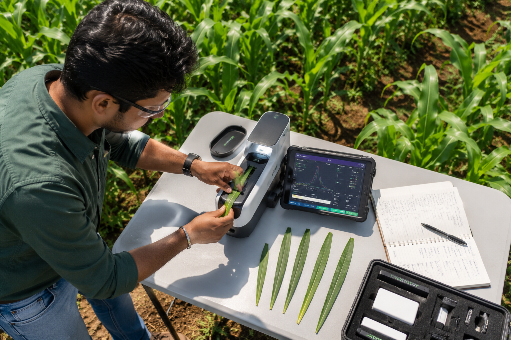

For decades, "precision agriculture" was a buzzword reserved for massive commercial operations with million-dollar budgets. It meant satellite imagery that was updated once a week, expensive soil testing that took days to process, and software that required a computer science degree to operate.
Today, the landscape is shifting dramatically. The democratization of technology—specifically cheaper sensors, ubiquitous connectivity, and intuitive cloud software—is bringing precision agriculture to farms of all sizes.
The Democratization of Data
The cost of IoT (Internet of Things) sensors has plummeted by over 70% in the last ten years. Where a farm might have previously installed one weather station to monitor 500 acres, they can now afford hyper-local sensors every 10 acres, providing a granular view of microclimates across the entire operation.
This shift from macro to micro management means inputs like water, fertilizer, and pesticides can be applied exactly where they are needed, exactly when they are needed. The result? Higher yields and significantly lower environmental impact.
The Role of Artificial Intelligence
Collecting data is only half the battle. The real value lies in interpreting it. Modern agricultural platforms like AGROVIA are leveraging machine learning algorithms to detect patterns that are invisible to the human eye.

For example, by combining real-time soil moisture data with hyper-local weather forecasts and historical crop performance, the platform can predict exactly when a crop will experience stress, allowing the farmer to irrigate proactively rather than reactively.
What This Means for the Future
As we look toward 2030, the integration of technology in agriculture will move from being a competitive advantage to a baseline requirement. With the global population expected to reach 9.7 billion by 2050, we need to produce 70% more food on roughly the same amount of arable land.
Precision agriculture isn't just about maximizing profit; it's the only viable path to sustainable global food security.